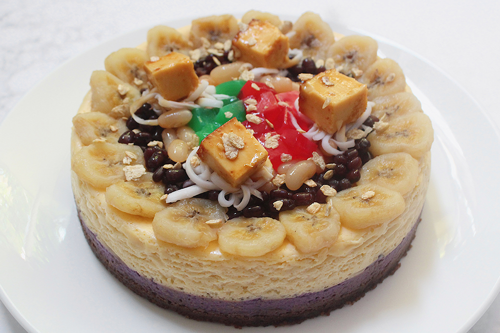
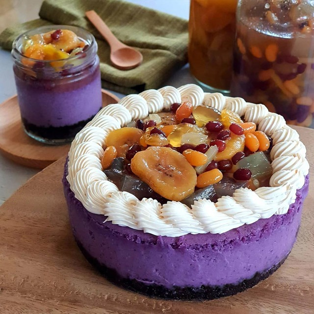
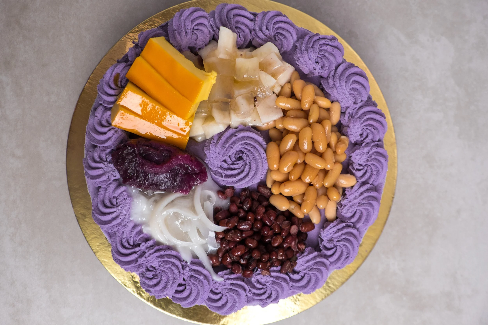
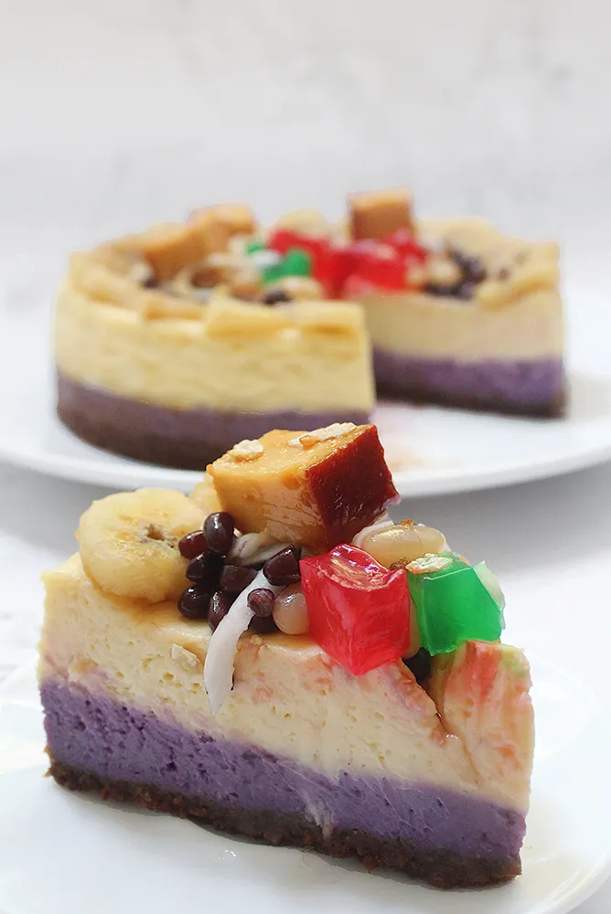

Halo Halo





History
Ang Halo-Halo ay isang iconic Filipino dessert na ang pangalan ay literal na nangangahulugang “mix-mix.” May pinagmulan ito sa Japanese dessert na kakigori, na dinala ng mga Japanese migrants sa Pilipinas noong early 20th century. Sa paglipas ng panahon, nag-evolve ito at naging uniquely Filipino sa pagdagdag ng iba’t ibang sangkap tulad ng beans, jellies, at leche flan. Naging popular ito bilang pampalamig lalo na sa mainit na klima ng bansa, at ngayon ay isa sa mga pinaka-kilalang desserts ng Pilipinas, simbolo ng diversity at creativity ng Filipino cuisine.
Ingredients & Notes
Crushed ice
Evaporated or condensed milk
Sweetened beans
Nata de coco
Kaong
Jackfruit
Ube
Leche flan
Sugar
Price
₱40